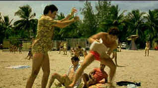

| Before Night Falls (SE), B+, A |
| New Line/2000/133/ANA 1.85 |
Perhaps the supreme accomplishment of Before Night Falls is the ease in which it marries the personal story of writer Reynaldo Arenas to the modern history of Cuba. Arenas was a young Cuban born on a remote farm who came of age during the Castro revolution in the late 1950s.. Arenas flourished on the family move to the city, honing his skills as a writer and finding out who he was. Arenas, filled with a passion for life, was also filled with a passion for men. As the Castro regime cracked down on homosexuals and political dissidents alike, as they squeezed the lifeblood from the artistic community, Arenas' life dissolved into a nightmare of oppression and horror. Before Night Falls, based on his memoir, recounts the excitement of discovery and the fight for survival under the most lamentable circumstances.
 |
| Beach games. ©New Line |
Director Julian Schnabel finds his stride with Before Night Falls,
his second feature film after the 1996 Basquiat. The work flexes its artistic soul with
passion and Schnabel's team of players are infected with his vision. Director Schnabel gives the
actors emotional freedom resulting in wonderful work across the board. The actors respond and react
to the periods of the film wonderfully well. Javier Bardem is outstanding as Reynaldo Arenas.
Bardem explores a extraordinary range of emotions in the course of the film. It's a beautifully
modulated Oscar nominated© performance; subtle facial expressions, body language, all work to
fulfill the vision of Arenas. Outstanding supporting cast members include Olivier Martinez and
Andrea Di Stefano, with Johnny Depp having double dipping in entertaining dual roles.
Production design, the score, music supervision, cinematography, meld seamlessly
into a coherent work of art. Cinematically, Before Night Falls breathes its own life.
There's no consistent look throughout the film, yet each scene lives vitally. A fine artistic
instinct governs the flow. Like looking at a great painting, the overall power of the work takes on
a quality beyond its individual parts. The beach scenes mix life into the grit of the sand the
warmth of the sun and the spray of the surf. Schnabel makes a daring choice of shifting
between English and Spanish with no seeming fixed pattern, but the shifts seem very natural.
Schnabel's pacing is excellent and the film never ceases to move in its natural arc.
The many cinematic textures and lighting treatments of Before Night Falls
are transferred to DVD with an fine understanding of the raw material. In grainy compositions, the
result is totally natural. If the light should be slightly blown out, so it is. Color is accurate
and well saturated. Night scenes are deep and highlight lighting perfect. Shadow detail is reveals
what's supposed to be in the shot and nothing more. Overall excellent contrast range. An excellent
Dolby Digital 5:1 surround sound track compliments the visual style handsomely.
Every aspect of the filmmaking process is covered by the rich audio
commentary in Before Night Falls. With director Julian Schnabel taking the lead, actor
Javier Bardem, writer Lázaro Gomez-Carriles, composer Carter Burwell and co-director of
photography Xavier Perez Grobet join is the free spirited discussion of the film and protagonist
Reynaldo Arenas. Schnabel explains his use of English and Spanish while cinematographer Grobet
comments that he feels he captured the essence of Schnabel's painting style in the film's look.
There's also a mini tour of Schnabel's studio hosted by the filmmaker and painter. It's very
interesting, but does it cast more light on the film? I don't think so. A short video presentation
from director Schnabel's daughter Lola is a nice compliment to the film. Finally, excerpts from a
1983 interview with Reynaldo Arenas presents us with a picture of the real man.

The Movie Poster Archive includes extensive poster images from the films of stars like Susan Hayward, Kirk Douglas, Katharine Hepburn and many more. Our featured star is James Mason

Selections from the Feature Archive
include articles on Akira Kurosawa, Frank
Darabont, Blonde Bimbos, Hollywood Street Gangs, or Vietnam: The
Hollywood Pariah, and many more....

Is North by Northwest Hollywood's definitive exploration of the nose? From schnozzles to
beezeers, film mavens make the most of the foremost. Click on Mount Hitchcock for more.


A film of extraordinary power that pulls no punches, The Grifters is not to be missed.
Hungry characters on the con, the short con, the long con, the self con.

DVD packaging can be the bane of the collector. Click on Rants and Raves for more.

 Gary Morris's insightful publication Bright Lights
Film Journal turns the celluloid in films from a unique perspective. Click on the image above
for more pure movie views.
Gary Morris's insightful publication Bright Lights
Film Journal turns the celluloid in films from a unique perspective. Click on the image above
for more pure movie views.

DiscReviews.com
is a new DVD review site
with a slick interface.
|
Home Theater Talk
Cartoons |